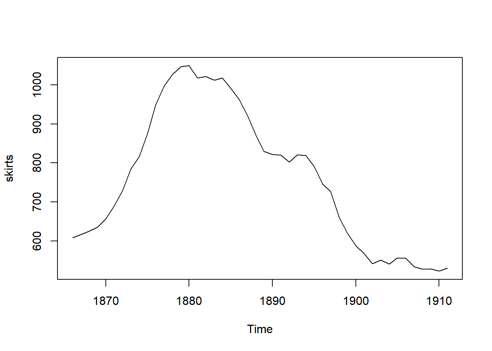
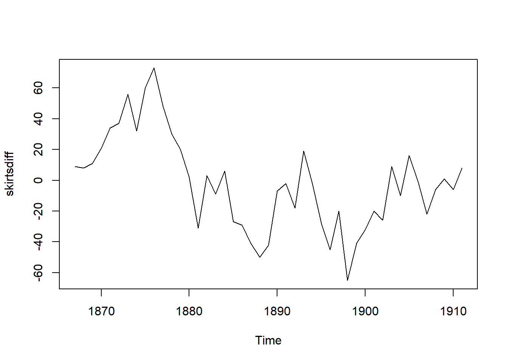
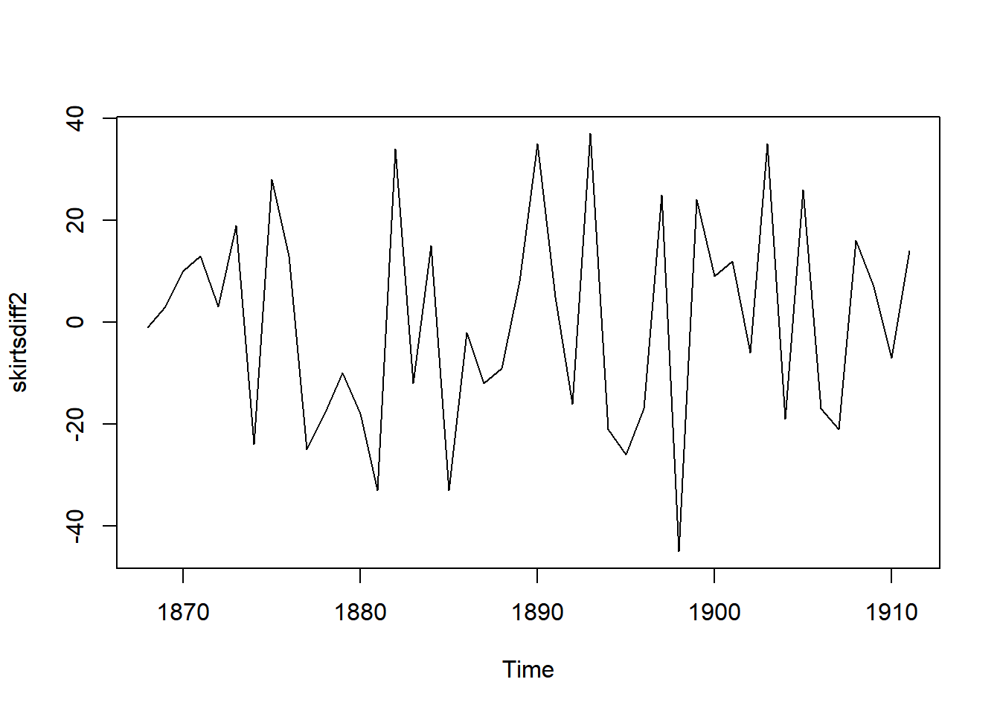
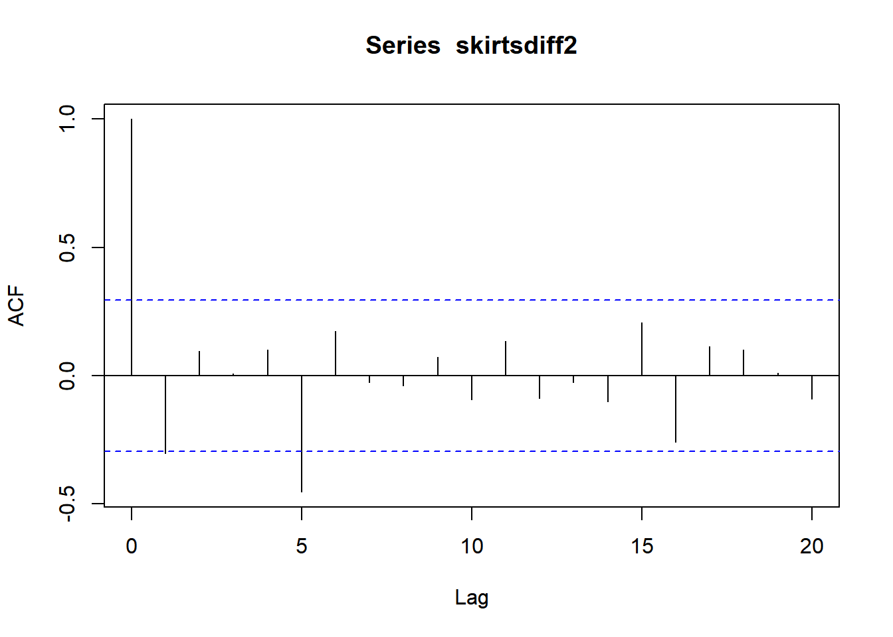
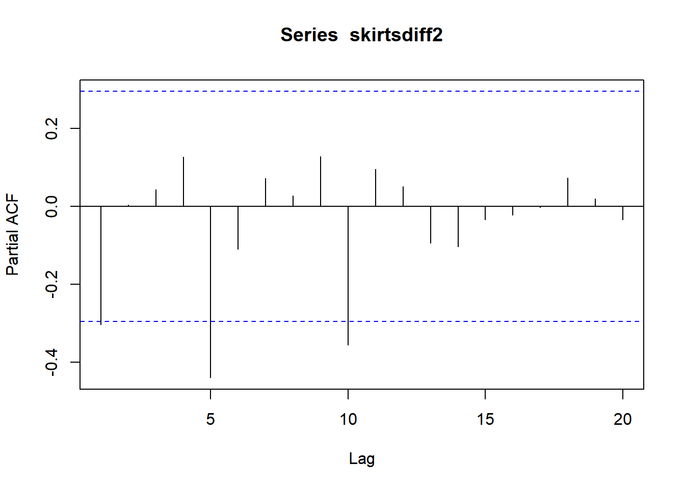
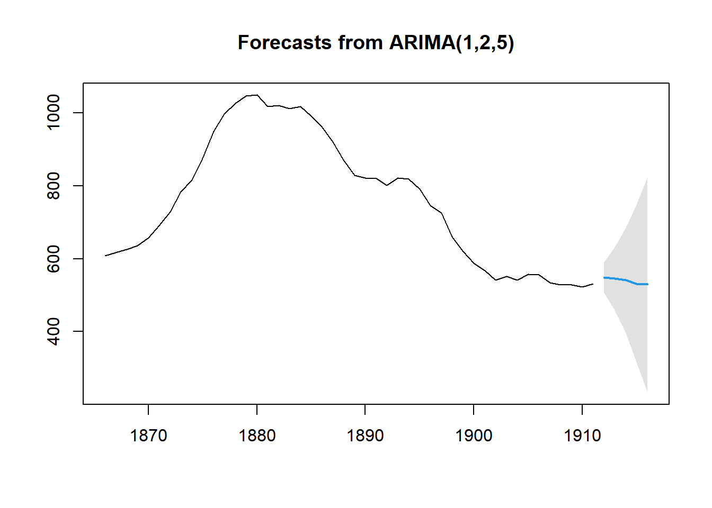
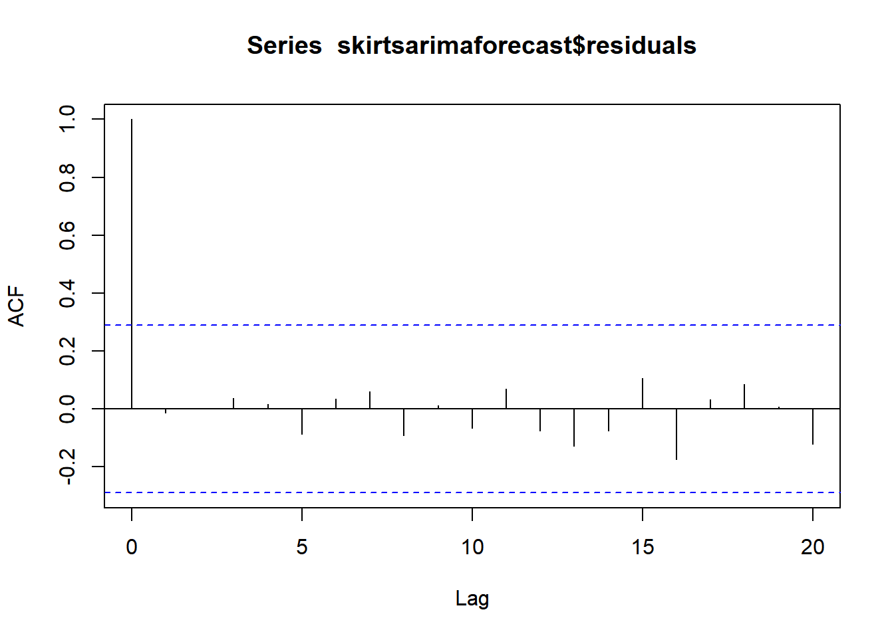
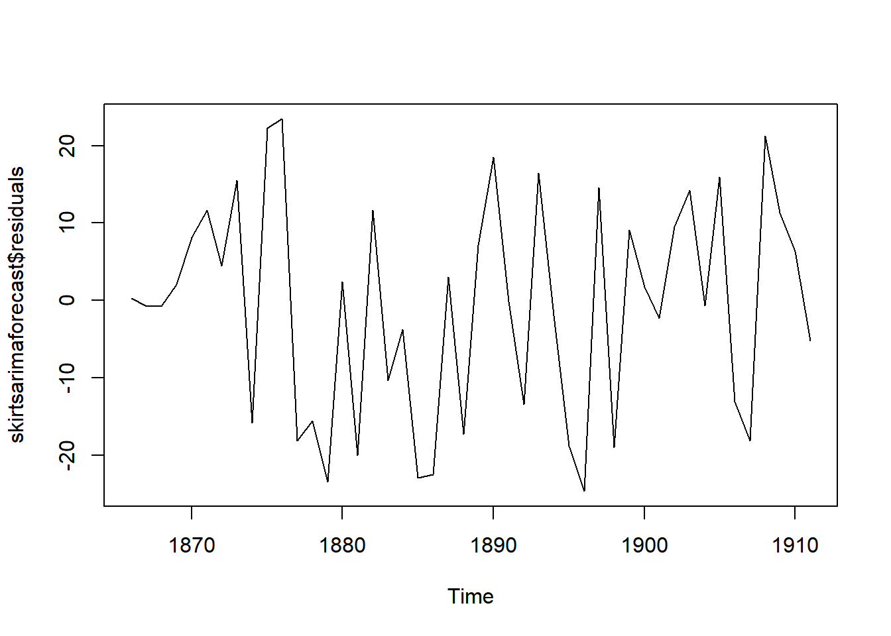

R时间序列ARIMA模型预测
Boylad · 2018-12-08
通过差分得到平稳时间序列
每年女子裙子边缘的直径做成的时间序列数据从1866-1911年在平均值上是不平稳的。随着时间增加，数值变化很大。
skirts <- scan("http://robjhyndman.com/tsdldata/roberts/skirts.dat", skip = 5)
skirts <- ts(skirts, start = c(1866)) #生成时间序列
skirts
## Time Series:
## Start = 1866
## End = 1911
## Frequency = 1
## [1] 608 617 625 636 657 691 728 784 816 876 949 997 1027 1047 1049
## [16] 1018 1021 1012 1018 991 962 921 871 829 822 820 802 821 819 791
## [31] 746 726 661 620 588 568 542 551 541 557 556 534 528 529 523
## [46] 531
plot.ts(skirts)
一阶差分，并画出差分序列的图：
skirtsdiff <- diff(skirts, differences = 1)
plot.ts(skirtsdiff)
从一阶差分图可以看出，数据仍是不平稳的，继续差分：
skirtsdiff2 <- diff(skirts, differences = 2)
plot.ts(skirtsdiff2)
二阶差分后的时间序列在均值和方差上看起来像是平稳的，随着时间推移，时间序列的水平和方差大致保持不变。因此，对裙子直径进行两次差分可以得到平稳序列。
确定合适的ARIMA模型
如果时间序列是平稳的，或者通过做n次差分转化为一个平稳时间序列，接下来就是要选择合适的ARIMA模型，这意味着要寻找ARIMA(p,d,q)中合适的p值和q值。
为了得到p值和q值，通常需要检查平稳时间序列的(自)相关图和偏自相关图。acf()和pacf()函数中设定plot=FALSE来得到自相关和偏自相关的真实值。
acf(skirtsdiff2, lag.max = 20)
acf(skirtsdiff2, lag.max = 20, plot = FALSE)
##
## Autocorrelations of series 'skirtsdiff2', by lag
##
## 0 1 2 3 4 5 6 7 8 9 10
## 1.000 -0.303 0.096 0.009 0.102 -0.453 0.173 -0.025 -0.039 0.073 -0.094
## 11 12 13 14 15 16 17 18 19 20
## 0.133 -0.089 -0.027 -0.102 0.207 -0.260 0.114 0.101 0.011 -0.090自相关图显示滞后一阶自相关值基本没有超过边界值，虽然五阶自相关值超出边界，但很可能属于偶然出现的，而且，自相关图在其他阶上都没有超出显著边界，而且可以期望1～20之间的自相关值偶尔会超出95%的置信边界。
pacf(skirtsdiff2, lag.max = 20)
pacf(skirtsdiff2, lag.max = 20, plot = FALSE)
##
## Partial autocorrelations of series 'skirtsdiff2', by lag
##
## 1 2 3 4 5 6 7 8 9 10 11
## -0.303 0.005 0.043 0.128 -0.439 -0.110 0.073 0.028 0.128 -0.355 0.095
## 12 13 14 15 16 17 18 19 20
## 0.052 -0.094 -0.103 -0.034 -0.021 -0.002 0.074 0.020 -0.034由上图可见，偏自相关选5阶，故ARIMA模型可确定为arima(1,2,5)。
skirtsarima <- arima(skirts, order = c(1,2,5))
skirtsarima
##
## Call:
## arima(x = skirts, order = c(1, 2, 5))
##
## Coefficients:
## ar1 ma1 ma2 ma3 ma4 ma5
## -0.4345 0.2762 0.1033 0.1472 0.0267 -0.8384
## s.e. 0.1837 0.2171 0.2198 0.2716 0.1904 0.2888
##
## sigma^2 estimated as 206.1: log likelihood = -183.8, aic = 381.6因此可得如下模型：\(y_t=-0.4345y_{t-1}+0.2762u_{t-1}+0.1033u_{t-2}+0.1472u_{t-3}+0.0267u_{t-4}-0.8384u_{t-5}\)
ARIMA模型预测
预测后5年裙子的边缘直径：
library(forecast)
## Registered S3 method overwritten by 'quantmod':
## method from
## as.zoo.data.frame zoo
skirtsarimaforecast <- forecast(skirtsarima, h = 5, level = c(99.5))
skirtsarimaforecast
## Point Forecast Lo 99.5 Hi 99.5
## 1912 548.5762 507.1167 590.0357
## 1913 545.1793 459.3292 631.0295
## 1914 540.9354 396.3768 685.4940
## 1915 531.8838 316.2785 747.4892
## 1916 529.1296 233.2625 824.9968
plot(skirtsarimaforecast)
ARIMA模型预测结果的检验
在指数平滑模型下，观察ARIMA模型的预测误差是否是平均值为0且方差为常数的正态分布(服从零均值、方差不变的正态分布)是个很好的办法，同时也要观察连续预测误差是否(自)相关。
acf(skirtsarimaforecast$residuals, lag.max = 20)
Box.test(skirtsarimaforecast$residuals, lag = 20, type = "Ljung-Box")
##
## Box-Ljung test
##
## data: skirtsarimaforecast$residuals
## X-squared = 8.5974, df = 20, p-value = 0.9871既然自相关图显示出在滞后1～20阶(lagsl-20)中样本自相关值都没有超出显著(置信)边界，而且Ljung-Box检验的p值为0.9871，所以推断在滞后1～20阶(lagsl-20)中没有证据说明预测误差是非零自相关的。
为了调查预测误差是否是平均值为零且方差为常数的正态分布(服从零均值、方差不变的正态分布)，可以做预测误差的时间曲线图。
plot.ts(skirtsarimaforecast$residuals)
预测误差的时间曲线图显示出随着时间的增加，方差大致为常数(大致不变)(尽管上半部分的时间序列方差看起来稍微高一些)。因此，把预测误差看作平均值为0、方差为常数的正态分布(服从零均值、方差不变的正态分布)是合理的。
既然依次连续的预测误差看起来不是相关的，而且看起来是平均值为0、方差为常数的正态分布，那么对于裙子直径的数据，ARIMA(1,2,5)看起来是非常合适的预测模型。
以上内容整理自《经济金融计量及其R语言应用》by朱顺泉